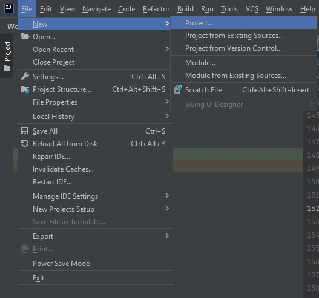
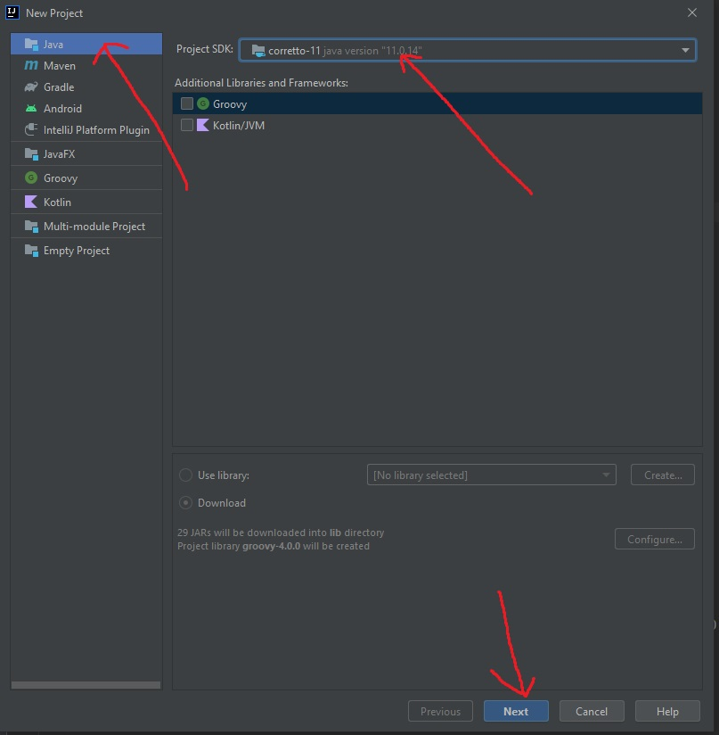
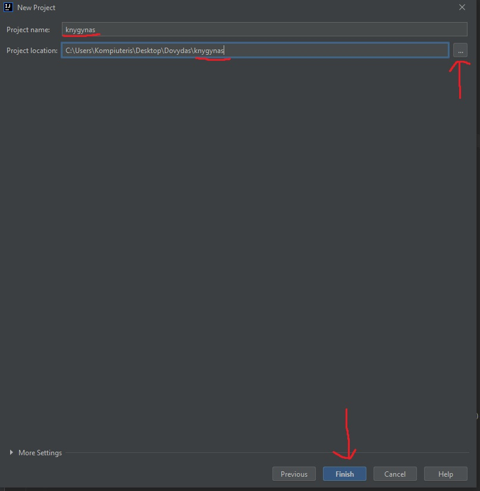
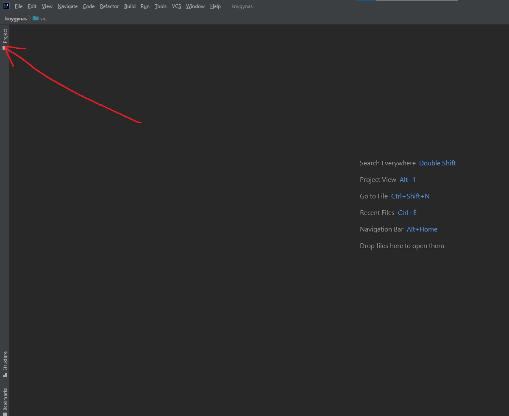

Kaip susikurti projektą ir failą


- Norint susikurti naują projektą, reikia atsidaryti IntelliJ IDEA Community Edition programą.
- Atsidarę programą, spauskite "File", kuris yra ekrano viršutiniame kairiame kampe.
- Tada pasirinkite New --> Project...
- Naujai atsidarusiame lange pasirenkame "Java", Project SDK: 11 versiją ir spaudžiame "Next" 
- Tada vėl spaudžiame "Next"
- Įrašykite projekto pavadinimą. Pasirinkite kur norite išsaugoti projektą, paspaudę mygtuką su trim taškais. Susikurkite projektui aplanką arba tiesiog prirašykite projekto pavadinimą po paskutinio pasviro brūkšniuko. Spaudžiame "Finish" 
Susikūrėme projektą. Dabar reikia susikurti Java failus (Java klases)
- Kairėje pusėje atsidarome "Project" skilty 
- Praskleidžiame projekto failus ir ant "src" aplanko spaudžiame dešinį pelės klavišą. Toliau, renkamės "New --> Java Class"
- Užvadiname failą (klasę) ir spaudžiame "Enter" klavišą
- lore
- lore
- lore
- lore
<p> yra pastraipos žymė